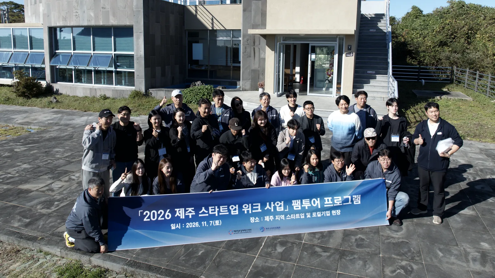

JEJUGRAPHER · 기록
2026 제주 스타트업위크 — 섬, 선을 넘다 / 제주 인사이트 트립
2026 済州スタートアップウィーク — 島、線を越える / 済州インサイトトリップ

통합 영상 統合映像
방문 기업 訪問企業
가이드오 ガイドオ
제주가 더 재밌어지는 여행
済州がもっと面白くなる旅
현장의 장면과 이야기로 제주 여행을 설계하고, 전문 가이드를 양성하는 브랜드
기업 페이지 보기 →
귤메달 キュルメダル
HAPPY MOMENT WITH CITRUS
HAPPY MOMENT WITH CITRUS
무설탕·저당을 축으로 제주 감귤을 가공하는 농업회사법인
기업 페이지 보기 →
잇더컴퍼니 イットゥザカンパニー
믿고 먹는 콘텐츠 푸드의 즐거움
信じて食べられる、コンテンツフードの楽しさ
제주 나물을 한 끼로 만드는 '믿고 먹는 콘텐츠 푸드' 기업
기업 페이지 보기 →
더사운드벙커 ザ・サウンドバンカー
나를 비우고, 자연을 받아들이는 연습
自分を空にして、自然を受け入れる練習
사라질 수 있는 제주의 소리를 모아 기록하고 들려주는 사운드스케이프 기업
기업 페이지 보기 →
제주맥주 済州ビール
하루의 끝에, 제주 한 잔.
一日の終わりに、済州の一杯。
제주산 햇감귤피로 빚은 위트 에일을 한림 금능 양조장에서 만드는 수제맥주 회사
기업 페이지 보기 →
컬러랩제주 カラーラボ済州（トゥッティコロリ）
세상의 모든 색, 뚜띠콜로리
世界のすべての色、トゥッティコローリ
"세상의 모든 색" — 제주의 유무형 자산을 색으로 기록하는 디자인 그룹
기업 페이지 보기 →
전체 다운로드 (발주처용) 一括ダウンロード
통합본 + 전체 사진 (Google Drive) — 준비 중사용 안내 ご利用案内
이 페이지는 검색에 노출되지 않습니다(noindex). 영상은 모두 유튜브 일부공개로, 링크를 아는 사람만 볼 수 있습니다. 각 기업은 자사 URL만 공유할 수 있습니다. 전체 공개 전환은 주최 측 승인과 초상권·APPI 옵트인 확인 뒤에 합니다.
本ページは検索に表示されません（noindex）。映像はすべてYouTubeの「限定公開」です。
本ページは検索に表示されません（noindex）。映像はすべてYouTubeの「限定公開」です。
본 콘텐츠는 2026 제주 스타트업위크 인사이트 트립 기록물로, 해당 기업은 자사 SNS·보도자료 등 상업적 홍보 용도로 2차 가공·활용할 수 있습니다.
本コンテンツは2026済州スタートアップウィーク インサイトトリップの記録で、該当企業は自社SNS・プレスリリース等の商業的広報目的で二次加工・活用いただけます。